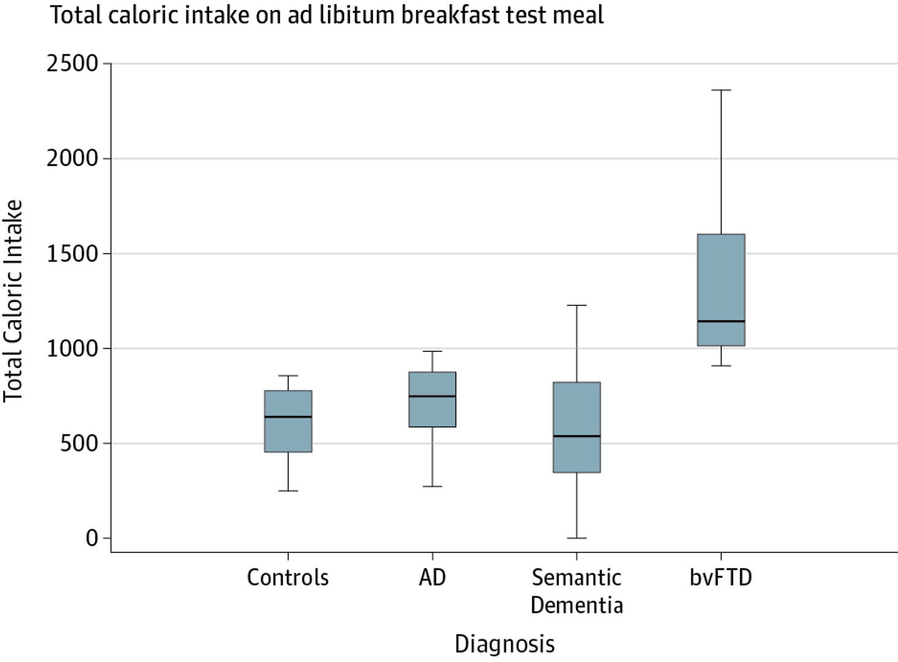
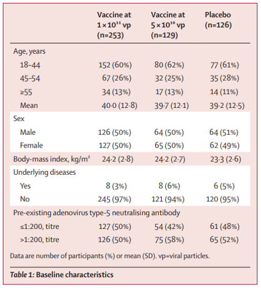
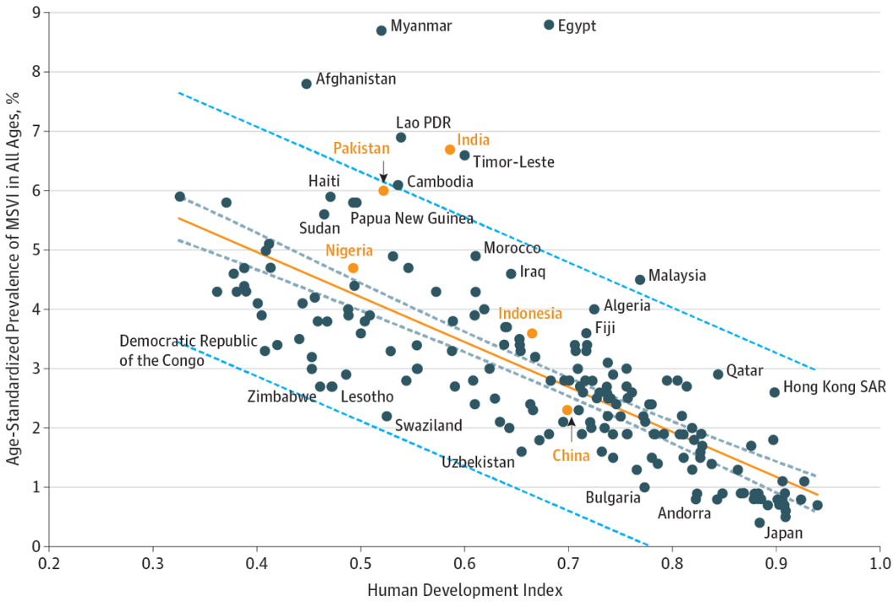

download.file("https://karamccor.github.io/b600-f24/hw/hw-01-template.Rmd", destfile="hw-01.Rmd")HW 01
Lectures 01-03
BIOS 600 Fall 2024 (McCormack)
Due: Friday, August 30, 2024 at 11:59pm
You must turn in a knitted file to Canvas from an RMarkdown file in order to receive credit. More details will be provided at the end of this document, and we will also review the process during class. As a reminder, homework may be turned in up to 3 days late, with a 5% penalty deducted for each 24-hour period late.
The RMarkdown template for this assignment may be found by running the following code in your Console.
Ahmed et al. (JAMA Neurology, 2016) conducted a study examining disturbances in eating behaviors among patients with dementia. Patients without dementia, with Alzheimer disease (AD), with semantic dementia, and with behavioral-variant frontal temporal dementia (bvFTD) were offered a breakfast buffet and left alone for 30 minutes to eat. After completion, the total caloric intake of each patient was measured. Boxplots summarizing the distributions of calories consumed across the patient types are displayed below.

Exercise 1
(5 points) Was this an observational study or an experimental study? Explain.
Exercise 2
(5 points)
Describe what it means for this specific study to be reproducible and replicable.
Exercise 3
(5 points)
What type of data are the following variables in the study? Be specific, e.g., “categorical ordinal” or “numeric discrete”, etc.
- Type of dementia (AD/SD/bvFTD/None)
- Total caloric intake
- % of calories from sugar
- Disease duration
- Frontal Rating Scale (mild/moderate/severe)
Exercise 4
(5 points)
Do you expect the distribution of caloric intake among bvFTD patients to be left-skewed, right-skewed, or symmetric? Why?
Exercise 5
(5 points)
Describe an appropriate visualization that summarizes the % of calories from sugar at the breakfast buffet to the Frontal Rating Scale of the study participants.
Exercise 6
(5 points) Describe an appropriate visualization that summarizes the total caloric intake at the breakfast buffet, disease duration in years, and type of dementia among these study participants.
Exercise 7
(5 points) The authors state that they uncovered “elevated total caloric intake…in patients with bvFTD, supporting its diagnostic value for this disease….” Is this is a reasonable statement to make from the data visualization? Explain why or why not.
Exercise 8
(5 points) Suppose the authors wanted to “tell a story” with the title to their visualization. Suggest a more effective title than the one presented.
Zhu et al. (The Lancet, 2020) conducted the first randomized trial of a recombinant adenovirus COVID-19 vaccine in healthy adults, with the aim of determining an appropriate dose for a larger efficacy study. They had three treatment arms: placebo, low dose (5 × 1010 virus particles), and high dose (1 × 1011 virus particles). The following table depicts the baseline characteristics of their study population:

Calculate the following probabilities. It’s ok to express answers as unsimplified fractions). If the probabilities cannot be determined, please state so and what additional information is needed to calculate the quantity of interest.
What is the probability that a randomly selected patient in the trial …
Exercise 9
(5 points) … was assigned to placebo?
Exercise 10
(5 points) … was assigned to placebo or was male?
Exercise 11
(5 points) … was assigned to placebo and was male?
Exercise 12
(5 points) … was not assigned to high dose vaccine and had no underlying diseases?
Exercise 13
(5 points) … was female or had underlying diseases?
Exercise 14
(5 points) … was female or was not assigned to either vaccine dose?
Exercise 15
(5 points) … was aged 18 - 44, given that they were assigned to high dose vaccine?
Exercise 16
(5 points) … was not assigned placebo, given that they were aged 45-54?
Wang et al. (JAMA Opthamology, 2017) examined the association of socioeconomic factors with prevalence of visual impairment and blindness. The following scatterplot depicts the relationship between Human Development Index (HDI) and the age-standardized prevalence of moderate to severe visual impairment (MSVI). The countries highlighted in orange are the 5 countries with the largest number of blind people.

Exercise 17
(5 points) In general, are higher or lower HDIs associated with higher prevalence of MSVI?
Exercise 18
(5 points) Among China, India, Pakistan, Nigeria, and Indonesia, which has the lowest HDI?
Exercise 19
(5 points) Does India have higher or lower prevalence of MSVI than might be expected given its HDI?
Exercise 20
(5 points) In their conclusion, the authors state “Burden of visual impairment and socioeconomic indicators were closely associated and may help to identify countries requiring greater attention to these issues.” Do you think this is a reasonable statement to make from the scatterplot? Why or why not?
Submission: You can knit the template into an .html file that can be opened by any web browser by clicking on the Knit in the bar above the scripting area, as demonstrated in class. To export this document as a .pdf, open the .html file in your web browser of choice and then print to or save as a .pdf document. (There is a way to directly knit to a .pdf file, but it’s quite a bit more involved…).
Turn in this .pdf document into Canvas in the appropriate assignment area. Ensure that your questions are neatly marked in your submission so that your TAs/graders can find them.